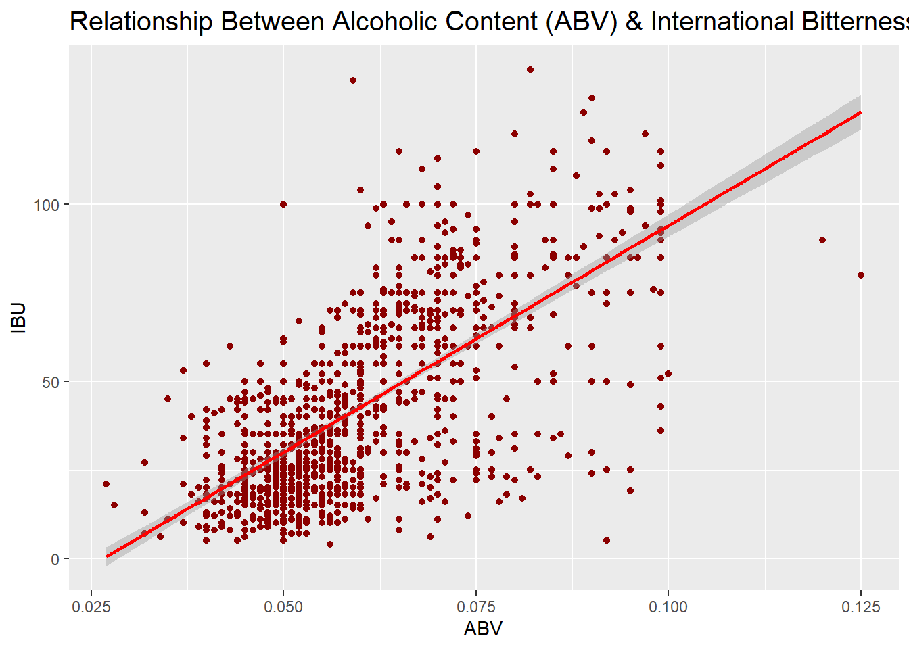
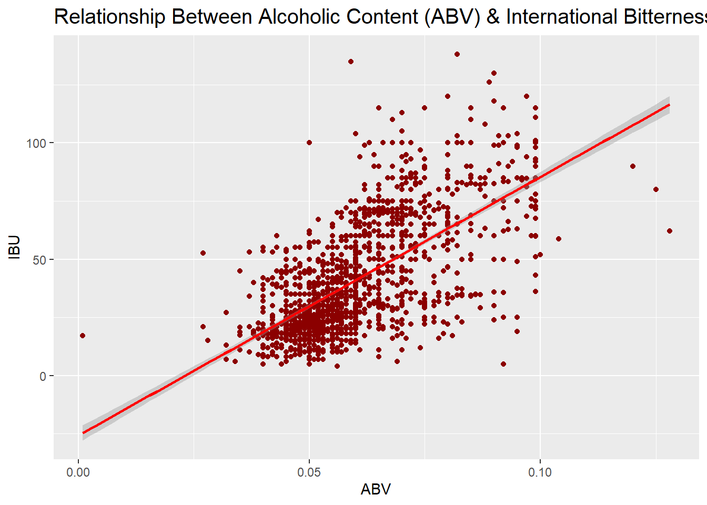
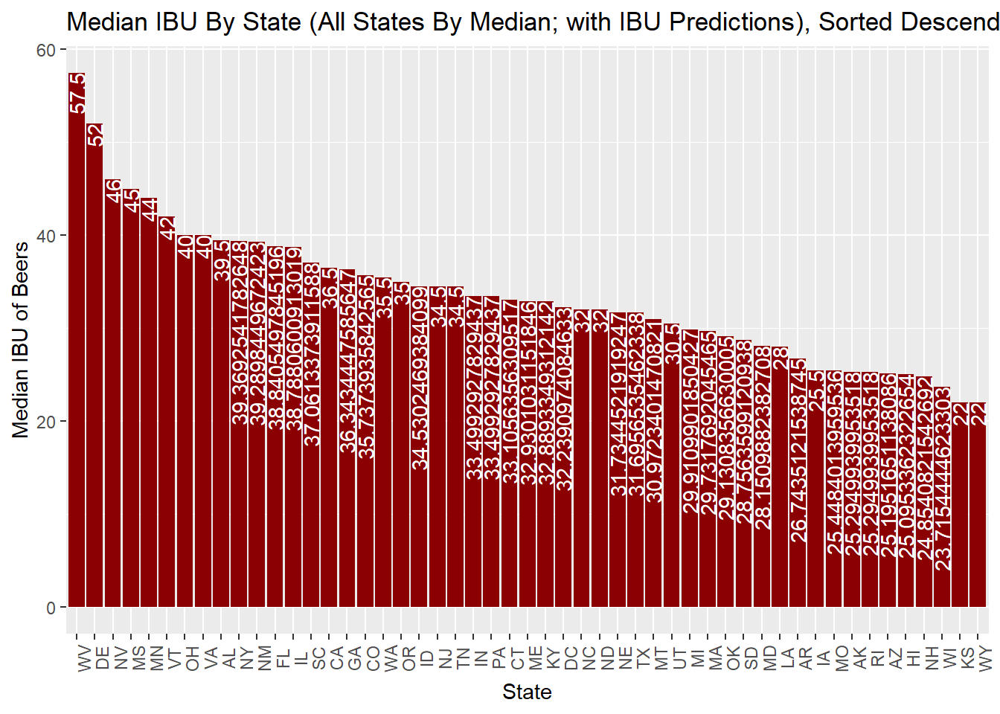

CaseStudy1
Shelby Provost
6/24/2021
Given the Beers data set, containing information of 2410 US craft beers, and the Breweries data set, containing 558 US breweries, an exploratory data analysis (EDA) was performed to extract potential insights from the data.
The first step of the analysis is to import and merge the breweries data with the beers data.
## Brewery_id Name.x Beer_ID ABV IBU Style Ounces Name.y
## 1 1 Get Together 2692 0.045 50 American IPA 16 NorthGate Brewing
## 2 1 Maggie's Leap 2691 0.049 26 Milk / Sweet Stout 16 NorthGate Brewing
## 3 1 Wall's End 2690 0.048 19 English Brown Ale 16 NorthGate Brewing
## 4 1 Pumpion 2689 0.060 38 Pumpkin Ale 16 NorthGate Brewing
## 5 1 Stronghold 2688 0.060 25 American Porter 16 NorthGate Brewing
## 6 1 Parapet ESB 2687 0.056 47 Extra Special / Strong Bitter (ESB) 16 NorthGate Brewing
## City State
## 1 Minneapolis MN
## 2 Minneapolis MN
## 3 Minneapolis MN
## 4 Minneapolis MN
## 5 Minneapolis MN
## 6 Minneapolis MN## Brewery_id Name.x Beer_ID ABV IBU Style Ounces
## 2405 556 Pilsner Ukiah 98 0.055 NA German Pilsener 12
## 2406 557 Heinnieweisse Weissebier 52 0.049 NA Hefeweizen 12
## 2407 557 Snapperhead IPA 51 0.068 NA American IPA 12
## 2408 557 Moo Thunder Stout 50 0.049 NA Milk / Sweet Stout 12
## 2409 557 Porkslap Pale Ale 49 0.043 NA American Pale Ale (APA) 12
## 2410 558 Urban Wilderness Pale Ale 30 0.049 NA English Pale Ale 12
## Name.y City State
## 2405 Ukiah Brewing Company Ukiah CA
## 2406 Butternuts Beer and Ale Garrattsville NY
## 2407 Butternuts Beer and Ale Garrattsville NY
## 2408 Butternuts Beer and Ale Garrattsville NY
## 2409 Butternuts Beer and Ale Garrattsville NY
## 2410 Sleeping Lady Brewing Company Anchorage AKThen a visual representation of the number of breweries in each state is created with a bar chart ordered from most to least number of breweries. The top 5 and bottom 5 states are extracted from the ordered data as well. 
## # A tibble: 5 x 2
## State count
## <chr> <int>
## 1 " DC" 1
## 2 " ND" 1
## 3 " SD" 1
## 4 " WV" 1
## 5 " AR" 2## # A tibble: 5 x 2
## State count
## <chr> <int>
## 1 " TX" 28
## 2 " OR" 29
## 3 " MI" 32
## 4 " CA" 39
## 5 " CO" 47## [1] 0.08422939The states with the most breweries are Colorado, California, Michigan, Oregon, and Texas. With 47 breweries, Colorado is home to 8.4% of the breweries. The states with the least breweries are District of Columbia, North Dakota, South Dakota, and West Virginia.
To perform additional analysis, the merged data is checked for NA’s.
## [1] ""
## [1] ""
## [1] ""
## [1] "Has NA"
## [1] "Has NA"
## [1] ""
## [1] ""
## [1] ""
## [1] ""
## [1] ""## sapply.BeersAndBrews..function.x...
## Brewery_id
## Name.x
## Beer_ID
## ABV Has NA
## IBU Has NA
## Style
## Ounces
## Name.y
## City
## State## Mode FALSE TRUE
## logical 2348 62## Mode FALSE TRUE
## logical 1405 1005The ABV variable has 62 NA values and the IBU variable has 1005 NA values. The NA’s will stay in the merged data set, however they will be filtered out when necessary throughout the analysis.
The median ABV and IBU by state are computed and visually represented with the NA values removed. 
## Med_ABV_All
## 1 0.056
## Med_IBU_All
## 1 35The states with the highest ABV and the highest IBU are extracted.
## [1] "State with the maximum alcoholic beer: CO, Lee Hill Series Vol. 5 - Belgian Style Quadrupel Ale from Upslope Brewing Company, with an alcohol percentage of 12.8%"## [1] "State with the maximum bitterness: OR, Bitter Bitch Imperial IPA from Astoria Brewing Company with an IBU of 138"The distribution of the alcoholic content is examined further.  The distribution of the alcoholic content appears to be slightly right skewed. There also is evidence of an outlier.
The distribution of the alcoholic content appears to be slightly right skewed. There also is evidence of an outlier.
The distribution of the international bitterness is examined further.  The distribution of the international bitterness appears to be right skewed.
The distribution of the international bitterness appears to be right skewed.
Then, ABV and IBU are assessed for a relationship. 
##
## Call:
## lm(formula = IBU ~ ABV, data = BeersAndBrews)
##
## Residuals:
## Min 1Q Median 3Q Max
## -78.849 -11.977 -0.721 13.997 93.458
##
## Coefficients:
## Estimate Std. Error t value Pr(>|t|)
## (Intercept) -34.099 2.326 -14.66 <2e-16 ***
## ABV 1282.037 37.860 33.86 <2e-16 ***
## ---
## Signif. codes: 0 '***' 0.001 '**' 0.01 '*' 0.05 '.' 0.1 ' ' 1
##
## Residual standard error: 19.26 on 1403 degrees of freedom
## (1005 observations deleted due to missingness)
## Multiple R-squared: 0.4497, Adjusted R-squared: 0.4493
## F-statistic: 1147 on 1 and 1403 DF, p-value: < 2.2e-16There is evidence of a linear relationship between ABV and IBU. This can be seen by the regression line showing a positive trend in the data.The higher the ABV, the larger the residuals appear to be, however this is not evidence against the trend since it is likely due to a smaller amount of data points in that range. A test was performed concluding that this visual relationship is significant. It provided a linear regression estimate of: IBU = -34.1 + 1282.037(ABV).
Style flags are used to prepare the data for machine learning.
##
## Abbey Single Ale Altbier
## 5 2 13
## American Adjunct Lager American Amber / Red Ale American Amber / Red Lager
## 18 133 29
## American Barleywine American Black Ale American Blonde Ale
## 3 36 108
## American Brown Ale American Dark Wheat Ale American Double / Imperial IPA
## 70 7 105
## American Double / Imperial Pilsner American Double / Imperial Stout American India Pale Lager
## 2 9 3
## American IPA American Malt Liquor American Pale Ale (APA)
## 424 1 245
## American Pale Lager American Pale Wheat Ale American Pilsner
## 39 97 25
## American Porter American Stout American Strong Ale
## 68 39 14
## American White IPA American Wild Ale Baltic Porter
## 11 6 6
## Belgian Dark Ale Belgian IPA Belgian Pale Ale
## 11 18 24
## Belgian Strong Dark Ale Belgian Strong Pale Ale Berliner Weissbier
## 6 7 11
## Bière de Garde Bock Braggot
## 7 7 1
## California Common / Steam Beer Chile Beer Cider
## 6 3 37
## Cream Ale Czech Pilsener Doppelbock
## 29 28 7
## Dortmunder / Export Lager Dubbel Dunkelweizen
## 6 5 4
## English Barleywine English Bitter English Brown Ale
## 3 3 18
## English Dark Mild Ale English India Pale Ale (IPA) English Pale Ale
## 6 13 12
## English Pale Mild Ale English Stout English Strong Ale
## 3 2 4
## Euro Dark Lager Euro Pale Lager Extra Special / Strong Bitter (ESB)
## 5 2 20
## Flanders Oud Bruin Flanders Red Ale Foreign / Export Stout
## 1 1 6
## Fruit / Vegetable Beer German Pilsener Gose
## 49 36 10
## Grisette Hefeweizen Herbed / Spiced Beer
## 1 40 9
## Irish Dry Stout Irish Red Ale Kölsch
## 5 12 42
## Keller Bier / Zwickel Bier Kristalweizen Light Lager
## 3 1 12
## Low Alcohol Beer Märzen / Oktoberfest Maibock / Helles Bock
## 1 30 5
## Mead Milk / Sweet Stout Munich Dunkel Lager
## 5 10 4
## Munich Helles Lager Oatmeal Stout Old Ale
## 20 18 2
## Other Pumpkin Ale Quadrupel (Quad)
## 1 23 4
## Radler Rauchbier Roggenbier
## 3 2 2
## Russian Imperial Stout Rye Beer Saison / Farmhouse Ale
## 11 18 52
## Schwarzbier Scotch Ale / Wee Heavy Scottish Ale
## 9 15 19
## Shandy Smoked Beer Tripel
## 3 1 11
## Vienna Lager Wheat Ale Winter Warmer
## 20 1 15
## Witbier
## 51KNN classification is used to investigate the relationship of ABV and IBU between India Pale Ales (IPA) and all other types of Ales.
The training data set contains 80% of the data, while the test data set contains the remaining 20%.
KNN classifications of IPA’s 
## [1] "Confusion Matrix of Ale Classification"## Confusion Matrix and Statistics
##
##
## knn_model_Ales 0 1
## 0 201 1
## 1 2 77
##
## Accuracy : 0.9893
## 95% CI : (0.9691, 0.9978)
## No Information Rate : 0.7224
## P-Value [Acc > NIR] : <2e-16
##
## Kappa : 0.9735
##
## Mcnemar's Test P-Value : 1
##
## Sensitivity : 0.9901
## Specificity : 0.9872
## Pos Pred Value : 0.9950
## Neg Pred Value : 0.9747
## Prevalence : 0.7224
## Detection Rate : 0.7153
## Detection Prevalence : 0.7189
## Balanced Accuracy : 0.9887
##
## 'Positive' Class : 0
## This model is 98.93% accurate in predicting whether a beer is an IPA using ABV and IBU.We are 95% confident that the true accuracy is between 96.91% and 99.78%.
KNN classification of all other Ales. 
## [1] "Confusion Matrix of Ale Classification"## Confusion Matrix and Statistics
##
##
## knn_model_Ales 0 1
## 0 165 3
## 1 0 113
##
## Accuracy : 0.9893
## 95% CI : (0.9691, 0.9978)
## No Information Rate : 0.5872
## P-Value [Acc > NIR] : <2e-16
##
## Kappa : 0.9779
##
## Mcnemar's Test P-Value : 0.2482
##
## Sensitivity : 1.0000
## Specificity : 0.9741
## Pos Pred Value : 0.9821
## Neg Pred Value : 1.0000
## Prevalence : 0.5872
## Detection Rate : 0.5872
## Detection Prevalence : 0.5979
## Balanced Accuracy : 0.9871
##
## 'Positive' Class : 0
## This model is 98.93% accurate in predicting whether a beer is an Ale other than IPA using ABV and IBU.We are 95% confident that the true accuracy is between 96.91% and 99.78%.
A basic Machine Learning pipeline is used for IBU predictions of the data with missing values for IBU.
A “No Skill” prediction is leveraged as a baseline, then linear regression, random forest and XGBoost are tested. The accuracy on all test sets are then aggregated (via RMSE). 
##
## Call:
## lm(formula = f, data = train)
##
## Residuals:
## Min 1Q Median 3Q Max
## -49.418 -7.917 -1.180 6.201 73.415
##
## Coefficients:
## Estimate Std. Error t value Pr(>|t|)
## (Intercept) -15.007 2.496 -6.012 2.48e-09 ***
## ABV 706.349 41.354 17.080 < 2e-16 ***
## IPA 13.029 5.235 2.489 0.012954 *
## Stout 8.602 2.282 3.770 0.000172 ***
## APA 13.538 1.887 7.174 1.33e-12 ***
## Porter -2.275 2.539 -0.896 0.370527
## Lager -2.044 1.895 -1.079 0.280976
## Blonde -5.788 2.401 -2.410 0.016094 *
## RedAle 4.021 2.090 1.924 0.054607 .
## BlackAle 24.580 3.553 6.919 7.68e-12 ***
## WheatAle -5.170 2.446 -2.113 0.034813 *
## American 6.657 1.439 4.626 4.17e-06 ***
## English 4.500 2.490 1.807 0.070997 .
## top_states 0.584 2.061 0.283 0.776944
## ABV:IPA 264.270 76.123 3.472 0.000537 ***
## ---
## Signif. codes: 0 '***' 0.001 '**' 0.01 '*' 0.05 '.' 0.1 ' ' 1
##
## Residual standard error: 13.58 on 1109 degrees of freedom
## Multiple R-squared: 0.7264, Adjusted R-squared: 0.723
## F-statistic: 210.3 on 14 and 1109 DF, p-value: < 2.2e-16

## user system elapsed
## 36.47 1.96 38.61
## Bootstrap sampling is being applied, p=0.1 argument is ignored
## running: regression cross-validation with 10 iterations
## running iteration: 1
## running iteration: 2
## running iteration: 3
## running iteration: 4
## running iteration: 5
## running iteration: 6
## running iteration: 7
## running iteration: 8
## running iteration: 9
## running iteration: 10## Fit MSE = 187.1819
## Fit percent variance explained = 72.3
## Median permuted MSE = 5.389412
## Median permuted percent variance explained = 99.205
## Median cross-validation RMSE = 3.697813
## Median cross-validation MBE = 0.2725954
## Median cross-validation MAE = 2.066643
## Range of ks p-values = 0.01652128 0.2699997
## Range of ks D statistic = 0.05 0.07494145
## RMSE cross-validation error variance = 0.3595239
## MBE cross-validation error variance = 0.07097777
## MAE cross-validation error variance = 0.05892349## [18:12:13] INFO: amalgamation/../src/tree/updater_prune.cc:101: tree pruning end, 40 extra nodes, 0 pruned nodes, max_depth=8
## [1] train-rmse:12.960311
## [18:12:13] INFO: amalgamation/../src/tree/updater_prune.cc:101: tree pruning end, 502 extra nodes, 0 pruned nodes, max_depth=24
## [2] train-rmse:10.572154 The RMSE accuracy on the models are finalized.
The RMSE accuracy on the models are finalized.
## xg_rmse rf_rmse lm_rmse noskill_rmse
## 1 9.214933 9.197549 9.411602 21.93078The optimal model, random forest, is used to predict all NA’s in the original IBU data.  After performing an exploratory data analysis, interest regarding the missing IBU values led to a machine learning pipeline. While 3 models were tested, the random forest model is the most optimal. The model was used to estimate these missing values and were plotted along with the original data.